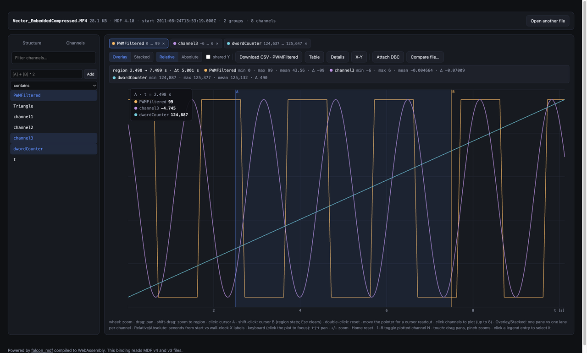

Cursors, and the stats between them
Click to place cursor A, shift-click for cursor B: the strip above the plot reports min, max, mean and Δt for every plotted channel between them. Between clicks, the readout follows the pointer sample by sample.
- cursors A / B
- region stats
- live readout